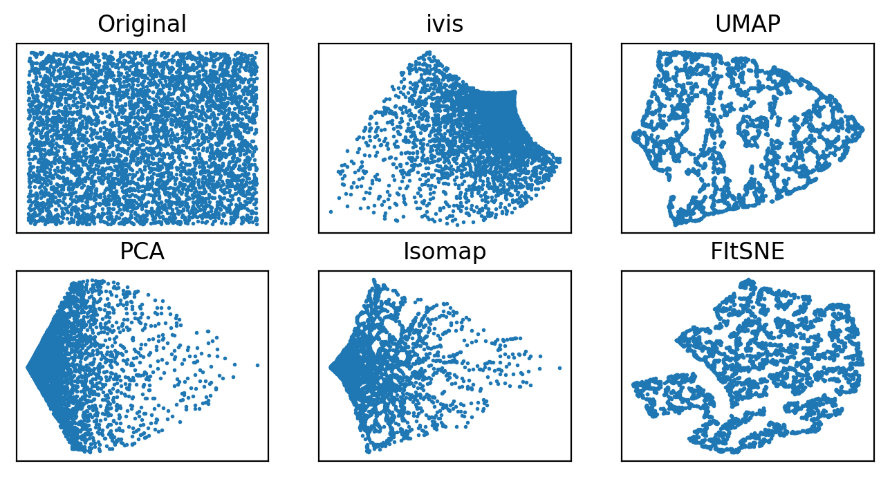
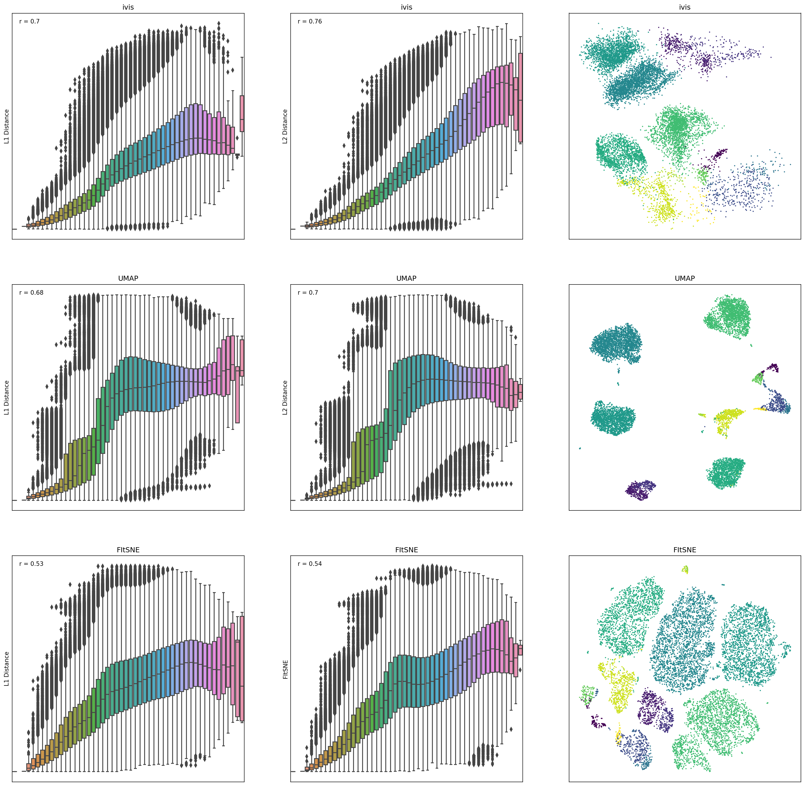

Comparing ivis with other dimensionality reduction algorithms
Ivis aims to reduce data dimensionality whilst preserving both global and local structures. There are a number of real-world applications where this feature could be useful. For example:
Anomaly detection
Biological interpretation of high-throughput experiments
Feature extraction
Several algorithms have been proposed to address the problem of dimensionality reduction, including UMAP and t-SNE. UMAP in particular, has been succesfully applied in machine learning pipelines. Ivis is different to these approaches in several ways.
First, ivis does not make any assumptions as to the inherent structure
of the dataset. Second, ivis is designed
to handle both small and extremely large datasets. Ivis performs well on
toy datasets such as the iris dataset, and scales linearly to datasets
with millions of observations. Indeed, we see that the main usecase for ivis are datasets with > 250,000 observations. Finally, ivis prioritises interpretation
over visual apperance - this is accomplished by imposing meaning to
distances between points in the embedding space. As such, ivis does not
create spurious clusters nor does it artificially pack clusters closer
together. Embeddings aim to be true to the original structure of the
data, which can be noisy in a real-world setting.
Visual Assessment
We will visually examine how popular dimensionality reduction algorithms - UMAP, t-SNE, Isomap, MDS, and PCA - approach two synthetic datasets with 5,000 observations in each. Since we are concerned with a dimensionality reduction problem, we will artificially add reduntant features to the original datasets using polynomial combinations (degree ≤ 10) of the original features.
Random Noise
To start, let’s examine how various dimensionality reduction methods behave in the presence of random noise. We generated 5000 uniformly distributed random points in a two-dimensional space and expanded the feature set using polynomial combinations. In all cases default parameters were used to fit multiple models.
Both ivis and PCA reliably recovered the random nature of our dataset. Conversely, Isomap, UMAP, and t-SNE appeared to pack certain points together, creating an impression of clusters within uniform random noise.
Structured Datasets
Next, we examine how well global features of a dataset, such as relative position of clusters, can be recovered in a low-dimensional space.

Using default parameters, we can see that ivis captures both
the general structure of each half-moon, as well as their relative
positions to one another. Both UMAP and t-SNE appear to introduce
spurious clusters and global relationships between the half-moons appear
to be disrupted.
Similarly as above, UMAP and t-SNE appear to generate a large number of small clusters along
the continuous distribution of the dataset. Although the global
structure is relatively well-preserved. ivis maintains both global and
local structures of the dataset.
Quantitative Evaluation
To measure how well each algorithm preserves global distances, we examined correlation between points in the original dataset and the embedding space. For this analysis, 10,000 observations were chosen from the Levine dataset (104,184 x 32) using random uniform sampling. Box plots represent distances across pairs of points in the embeddings, binned using 50 equal-width bins over the pairwise distances in the original space. Pearson correlation coefficients were also computed over the pairs of distances.

ivisappeared to preserve both a small-, mid-, and large-scale L1 and L2 distances, whilst UMAP and t-SNE seemed to ignore mid- to large-scale distances. Interestingly,iviswas particularly good at preserving L2 distances in low-dimensional space.